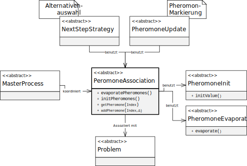

类 AbstractPheromoneAssociation<P extends AbstractProblem>
java.lang.Object
eu.andredick.aco.pheromoneassociation.AbstractPheromoneAssociation<P>
- 类型参数:
P- 问题的具体化类
- 直接已知子类:
PheromoneOnSubsetPairs,PheromoneOnSubsets
信息素关联的抽象类
与特定问题实例相关的信息素可以作为一个层,
此处定义了信息素蒸发和初始化的规则.
信息素关联将信息素分配给特定问题的实体.
因此，信息素关联的每种实现都对应特定的问题.
这种依赖关系由泛型编程
因此，有必要确定信息素关联的具体问题。.
以下组件中需要信息素关联:
与特定问题实例相关的信息素可以作为一个层,
此处定义了信息素蒸发和初始化的规则.
信息素关联将信息素分配给特定问题的实体.
因此，信息素关联的每种实现都对应特定的问题.
这种依赖关系由泛型编程
<P extends AbstractProblem> 实现.因此，有必要确定信息素关联的具体问题。.
以下组件中需要信息素关联:
- 主流程
AbstractMasterProcess - 信息素起始
AbstractPheromoneInit - 信息素蒸发
AbstractPheromoneEvaporation - 候选方案的选择
AbstractNextStepStrategy - 信息素标记
AbstractPheromoneUpdate

-
字段概要
字段修饰符和类型字段说明protected AbstractPheromoneEvaporation信息素蒸发的表达protected AbstractPheromoneInit信息素初始化protected P与信息素相关的的特定问题的实现 -
构造器概要
构造器 -
方法概要
修饰符和类型方法说明abstract voidaddPheromone(int j, float ph_delta) 向现有信息素添加额外的信息素。abstract void启动整个信息素蒸发的时间步长。abstract floatgetPheromone(int j) 提供与问题实体j相关的信息素浓度abstract void使用启动规则为问题的所有实体启动信息素浓度pheromoneInitRule.
此方法建立整个信息素的初始状态，该状态在ACO算法启动时应存在.voidsetEvaporationRule(AbstractPheromoneEvaporation evaporationRule) 用于实现信息素蒸发的方法voidsetPheromoneInitRule(AbstractPheromoneInit pheromoneInitRule) 用于实现信息素起始的方法
-
字段详细资料
-
problem
与信息素相关的的特定问题的实现 -
evaporationRule
信息素蒸发的表达 -
pheromoneInitRule
信息素初始化
-
-
构造器详细资料
-
AbstractPheromoneAssociation
构造函数- 参数:
problem- 特定的问题实例
-
-
方法详细资料
-
evaporatePheromones
-
initPheromones
使用启动规则为问题的所有实体启动信息素浓度pheromoneInitRule.
此方法建立整个信息素的初始状态，该状态在ACO算法启动时应存在. -
getPheromone
提供与问题实体j相关的信息素浓度- 参数:
j- 问题实体的索引- 返回:
- 与问题实体j相关的信息素浓度
-
addPheromone
向现有信息素添加额外的信息素。
该方法由信息素标记组件 (AbstractPheromoneUpdate) 使用.- 参数:
j- 问题实体的索引ph_delta- 增加的信息素浓度
-
setEvaporationRule
用于实现信息素蒸发的方法- 参数:
evaporationRule- 信息素蒸发
-
setPheromoneInitRule
用于实现信息素起始的方法- 参数:
pheromoneInitRule- 信息素起始
-